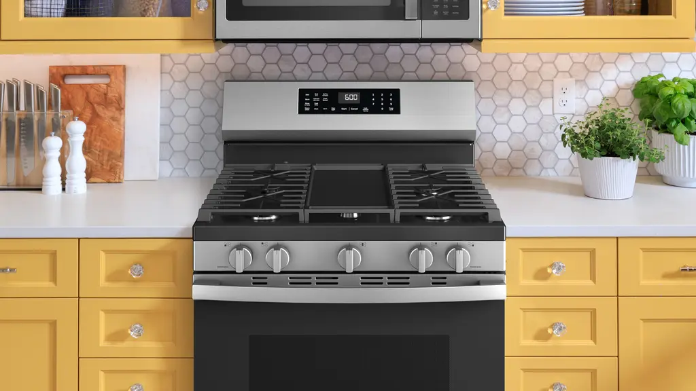

Appartement en feu
Vous vivez au dernier étage d'un appartement de 8 étages. Vous avez faim, mais vous n'avez pas d'argent pour acheter quelque chose à l'extérieur. En revanche, dans votre réfrigérateur, vous avez des ingrédients pour préparer à manger, mais vous ne savez pas cuisiner. Qu'allez-vous faire ?